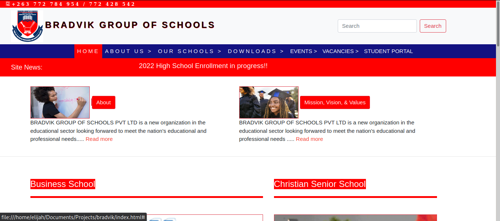

About Me
My name is Emmanuel Kennedi. The tech blog probably leads you to the conclusion that I am a computer nerd....I'll own that. I love computers and all the devices that rely on them, including humanity (LULZ). I am a Software Engineering student at Zimbabwe Open University and am just starting the first semester of my third year at the time of this writing. I'm also a freelance web developer, graphic designer and ethical hacker. People who know me look to me to solve all their tech related problems which has pushed me to learn as much as I can so as to always have an answer for them. As I persue my dream of building dreams, I hope to make a couple of billion in the process.
About The Blog
I put this site up to showcase my programming and graphic design skills. I hope to inspire my fellow Zimbabwean youth to take an active part on the digital front so as to create opportunities for posterity. This is a platform on which I will document my journey in the ICT industry. I will also post tutorials and stories of others fighting to make it at a young age despite the state of the economy.
My Skills and Experiences
I am a self-taught programmer still on the never ending learning journey. I have quite a bit of experience in web technologies such as PHP, Javascript, HTML5, and CSS. I'm also familiar with the use of frameworks such as Bootstrap and w3css. When it comes to compiled languages I am fluent in both C and C++. I also have knowledge of Python and Java. I am also part of AFRICC, the team that represents Africa at the ICC.
Download my CV
On the hardware side I have had experience with installation and configuration of networking devices. I can also do some basic pentesting though I'm still a noob in this area.
Projects
School Website:

Laboratory Information Managment System:
School ERP: